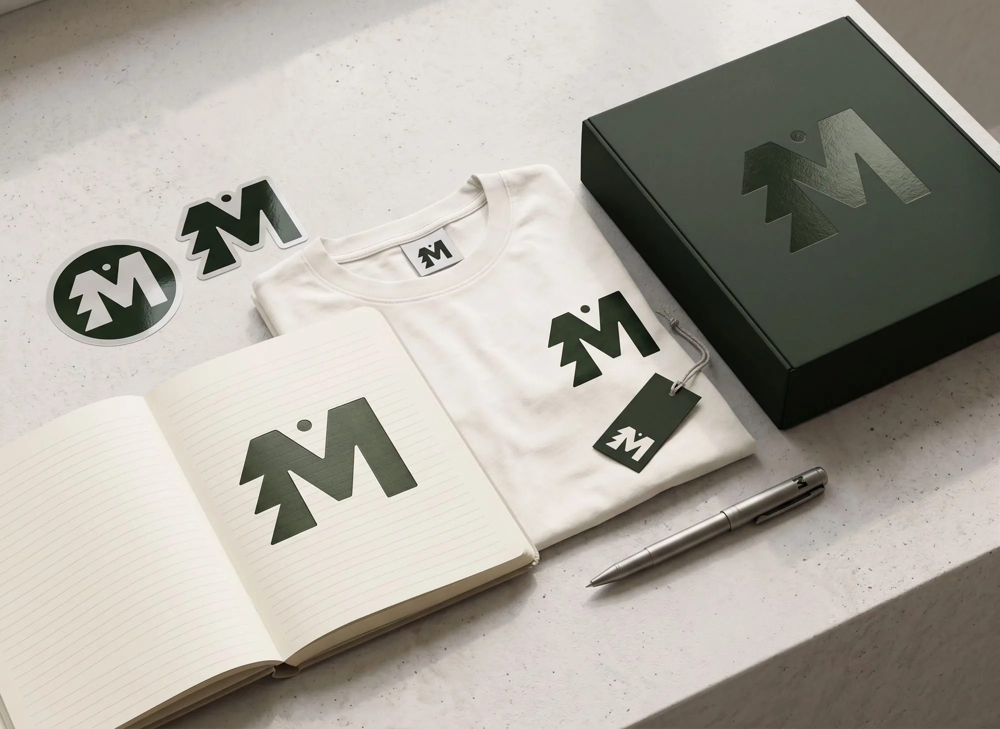

Interface patterns for the forest & the stars.
A component library built on the same restraint as the brand: one accent per composition, hairline structure, and the mark’s point of light carried through every interactive state.
Logo
MAGZ is rooted in the forests and mountains of Tynset and driven by a lifelong curiosity for the universe. The logo combines a bold M, a tree-like silhouette inspired by Nordic nature, and a celestial dot representing exploration, wonder and creativity. Together they form a symbol of where MAGZ exists: between the forest and the stars.
The primary mark: an M that doubles as a spruce, with a single celestial dot resting above the tree line. It reads as one shape at any size, from a favicon to the side of a box.
The mark, across the palette
In the world

Color
Forest Deep and Cream carry the system as primary ink and surface. Forest and Moss support mid-weight moments. Lime and Acid are seasoning — reserved for a single accent per composition, never a base.
Semantic mapping
Typography
Two faces, two jobs. The serif carries editorial weight; the sans carries function. Neither is ever asked to do the other’s work.
Type scale
Spacing
A 4px base unit, scaled geometrically. Generous whitespace is part of the restraint — when in doubt, take the larger step.
Mark & motif
The mark’s circular counterform — a point of light above the tree line — is the one signature the system allows itself. It recurs as the single active indicator throughout, so it always means the same thing: attention, here.
Grid & layout
A 12-column grid on desktop, collapsing to 8 on tablet and 4 on mobile. Columns are fluid; gutters and margins come from the spacing scale, so layout and whitespace share one vocabulary.
Column grid — desktop
Specification
| Tier | Columns | Gutter | Outer margin | Container |
|---|---|---|---|---|
| Desktop ≥ 960px | 12 | 24px (space-5) | 56px | max 1200px, content measure 920px |
| Tablet 640–959px | 8 | 16px (space-4) | 32px | fluid |
| Mobile < 640px | 4 | 16px (space-4) | 20px | fluid |
Responsive
Three breakpoints, mobile-content-first. Display type scales fluidly with the viewport; spacing steps down one token below the desktop tier so density rises gently, never abruptly.
Breakpoints
| Token | Range | Behavior |
|---|---|---|
| bp-sm | < 640px | 4-col grid, stacked layouts, full-width cards and modals |
| bp-md | 640–959px | 8-col grid, sidebar collapses to top navigation |
| bp-lg | ≥ 960px | 12-col grid, persistent sidebar, content measure 920px |
Fluid typography
Spacing compression
Below bp-lg, section rhythm steps down one token (48 → 32) and page padding tightens. Component-internal spacing never changes — only the space between blocks compresses.
Design tokens
The full sheet, ready to drop into CSS, Tailwind config, or a token pipeline. Components consume semantic aliases — never primitives — which is what makes the dark theme a pure token swap.
Accessibility
Every ratio below is computed, not estimated, against the actual composited backgrounds. Body and secondary text meet WCAG 2.1 AA (4.5:1); large display text and non-text indicators meet 3:1.
Contrast — measured
| Pair | Light | Dark | Requirement |
|---|---|---|---|
| Ink on surface | 12.5 : 1 | 11.8 : 1 | 4.5 : 1 — AA body |
| Muted text on surface | 7.9 : 1 | 7.2 : 1 | 4.5 : 1 — AA body |
| Faint labels on surface | 5.1 : 1 | 5.0 : 1 | 4.5 : 1 — AA body |
| Cream on Forest Deep | 12.5 : 1 | 4.5 : 1 — AA body | |
| Focus ring on surface | 3.6 : 1 (Forest) | 9.3 : 1 (Acid) | 3 : 1 — non-text |
| Badge & alert text | 5.2–8.8 : 1 | ≥ 5 : 1 | 4.5 : 1 — AA body |
The focus ring is theme-aware on purpose: Acid fails 3:1 on white, so light mode uses Forest — the brand’s point of light appears at full strength only where it can actually be seen, in the dark.
Keyboard & focus order
Focus order follows DOM order, which matches visual order: sidebar, then content, top to bottom. Every interactive element — including tabs, tooltips and the modal close — is a native focusable element with a visible ring. Tooltips open on keyboard focus, not only hover. Reduced-motion preferences disable the spinner and all transitions.
ARIA in practice
Touch targets
On coarse pointers, all interactive elements enforce a 44px minimum height and selection controls grow to 22px — no layout change needed on precision devices.
Buttons
One primary action per view. Secondary and ghost styles recede on purpose — they should never compete with the primary button for attention. Buttons and CTAs are the system’s brand UI: fully rounded pills, the organic shape reserved for invitations to act.
Variants
Sizes
On dark surface
Form controls
Focus states use the acid ring rather than a generic blue — the same point of light that marks an active nav item marks an active field.
Text inputs
Selection controls
Badges
Square corners, not pills — deliberately. Badges, inputs, tables and alerts are system UI: tight geometry for dense information. The pill shape stays reserved for actions, so form alone tells you whether something is an invitation or a control.
Cards
A lift on hover — 2px of translation, a soft shadow — is the only motion a card needs to feel touchable.
Alerts
Brand-toned, not traffic-light. Every alert stays inside the palette — even danger is the rust already established in the guidelines, not a generic red.
Table
Hairline rules do the separating — no zebra striping, no heavy borders.
| Project | Discipline | Status | Updated |
|---|---|---|---|
| Nordlys Identity | Brand | Shipped | 04 Jun 2026 |
| Fjellrom Editorial | In review | 02 May 2026 | |
| Aurora Type Study | Type | Draft | 21 Apr 2026 |
| Studio Proposal 2026 | Deck | Needs input | 18 Apr 2026 |
Modal
Reserved for decisions that need full attention — an overlay that dims everything else to Forest Deep at partial opacity.
Delete this entry?
Tooltip
A quiet second voice — brief, dark, and dismissed the instant the cursor moves on.
Progress & loading
The spinner is the motif in motion — a point of light in orbit, not a generic ring.
Progress
Spinner
Avatar
The status dot borrows directly from the mark — online is the same acid point of light used everywhere else in the system.